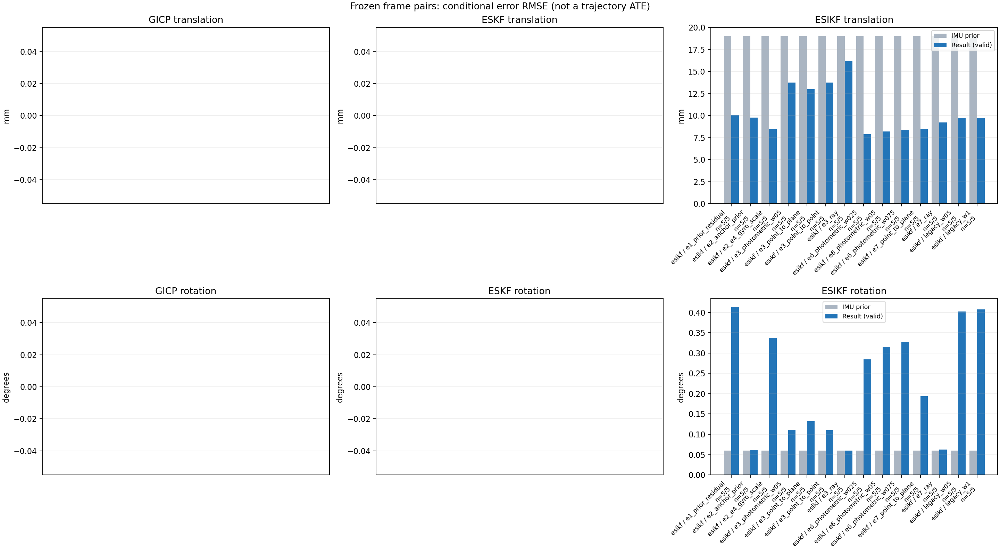

20261015_112940_pitch_up · depth=disparity_cache · cache=8c23ec8f4b863829b220
模型视差：/home/ubuntu22/slam/SIO_SLAM/models/tensorrt/disp_896x448_fp16.plan；engine SHA256=604cf6ac1f705c877260711730dd5d2d58c2a21f3020c03c668401ef7fb1e768。输入为生产裁剪与光照处理后的 RGB 0..255；此实验使用原始浮点像素视差，不应用完整前端的邻域视差后处理。
原始 ONNX SHA256：e9f49736a65d68d06681add463866b6defdf78fdd7f4f50f6cc941b682fdc0bc。
代价体图改写验证：ONNX Runtime 固定随机特征输入，最大绝对误差 0；该项检查图改写，完整模型精度仍需由录制数据评估。
配准代码版本：744ac2d993ae629b0cc44a3b1d995e04ab4fad48；观测生成版本：744ac2d993ae629b0cc44a3b1d995e04ab4fad48。
固定图像对与纯 IMU 先验；ESKF 回放固定 GICP 观测，ESIKF 直接读取点云。真值只用于此报告。
同时查看 converged 与 solver_status：上游默认 Stereo 在 max_iter / stopped_at_minimum 时也可能置 converged=true。valid 表示输入检查通过，不表示精度提升。欧氏 GICP 未提供独立的点距 RMSE，该列显示 NaN。
误差按每对图像的锚点计算，单位 m / degrees。此处 RMSE 不是全序列 ATE；末帧受同一锚点条件约束。NIS 与条件马氏距离是诊断量，少量相关图像对不能用于宣称协方差已校准。
全部指标 CSV · R / P / K 矩阵 CSV · Stereo 求解逐轮 CSV · ESIKF 逐轮 CSV · 配置快照 · 矢量图
unflagged 排除纯惯性先验平移误差超过 50 mm 的图像对；whitened 为误差按协方差白化后的每自由度均值，协方差与实际误差相符时约为 1。
| stage | method | variant | valid | total | result_translation_rmse_m | result_rotation_rmse_deg | result_translation_median_m | result_rotation_median_deg | result_translation_rmse_unflagged_m | result_rotation_rmse_unflagged_deg | improved_translation | improved_rotation | posterior_whitened_by_P_rot_mean | posterior_whitened_by_P_trans_mean |
|---|---|---|---|---|---|---|---|---|---|---|---|---|---|---|
| esikf | esikf | e1_prior_residual | 5 | 5 | 0.010105 | 0.41318 | 0.0090853 | 0.30807 | 0.010105 | 0.41318 | 1 | 0 | 299.57 | 110.81 |
| esikf | esikf | e2_anchor_prior | 5 | 5 | 0.0097735 | 0.061296 | 0.008705 | 0.027454 | 0.0097735 | 0.061296 | 2 | 2 | 321.65 | 332.16 |
| esikf | esikf | e2_e4_gyro_scale | 5 | 5 | 0.0084955 | 0.337 | 0.0070331 | 0.022415 | 0.0084955 | 0.337 | 2 | 2 | 247.38 | 260.57 |
| esikf | esikf | e3_photometric_w05 | 5 | 5 | 0.01377 | 0.11072 | 0.0064903 | 0.035808 | 0.01377 | 0.11072 | 4 | 2 | 5.5833 | 13.123 |
| esikf | esikf | e3_point_to_plane | 5 | 5 | 0.012996 | 0.13222 | 0.0063639 | 0.026471 | 0.012996 | 0.13222 | 5 | 3 | 4.9345 | 8.4222 |
| esikf | esikf | e3_point_to_point | 5 | 5 | 0.01377 | 0.11042 | 0.0064903 | 0.035809 | 0.01377 | 0.11042 | 4 | 2 | 5.5806 | 13.136 |
| esikf | esikf | e3_ray | 5 | 5 | 0.0162 | 0.059678 | 0.0064565 | 0.028264 | 0.0162 | 0.059678 | 4 | 3 | 4.2762 | 8.4997 |
| esikf | esikf | e6_photometric_w025 | 5 | 5 | 0.007878 | 0.28425 | 0.0038569 | 0.020569 | 0.007878 | 0.28425 | 3 | 2 | 50.376 | 66.67 |
| esikf | esikf | e6_photometric_w05 | 5 | 5 | 0.0082029 | 0.315 | 0.0059784 | 0.014622 | 0.0082029 | 0.315 | 3 | 2 | 112.51 | 130.8 |
| esikf | esikf | e6_photometric_w075 | 5 | 5 | 0.0083868 | 0.32799 | 0.0070236 | 0.017504 | 0.0083868 | 0.32799 | 2 | 2 | 177.85 | 195.72 |
| esikf | esikf | e7_point_to_plane | 5 | 5 | 0.0085333 | 0.19374 | 0.0054037 | 0.045517 | 0.0085333 | 0.19374 | 3 | 1 | 18.139 | 25.972 |
| esikf | esikf | e7_ray | 5 | 5 | 0.0092462 | 0.062839 | 0.0061981 | 0.0238 | 0.0092462 | 0.062839 | 2 | 2 | 4.2796 | 38.279 |
| esikf | esikf | legacy_w05 | 5 | 5 | 0.0097579 | 0.40202 | 0.0087189 | 0.27856 | 0.0097579 | 0.40202 | 3 | 0 | 145.12 | 50.663 |
| esikf | esikf | legacy_w1 | 5 | 5 | 0.0097572 | 0.40736 | 0.0086968 | 0.29716 | 0.0097572 | 0.40736 | 3 | 0 | 293.85 | 100.74 |

| stage | case | method | variant | status | solver_status | inliers | converged | covariance_convention | covariance_from_hessian | fitness | registration_rmse_m | prior_trans_error_m | result_trans_error_m | prior_rot_error_deg | result_rot_error_deg | prior_flagged | R_rot_trace_rad2 | R_pos_trace_m2 | nis_regularized | posterior_whitened_by_P_rot | posterior_whitened_by_P_trans |
|---|---|---|---|---|---|---|---|---|---|---|---|---|---|---|---|---|---|---|---|---|---|
| esikf | static_start | esikf | legacy_w1 | updated | converged | 5291 | 1 | 1 | 0 | 0 | 0.00012006 | 0.0036598 | 0.0069246 | 0.29716 | 0 | 4.6055e-07 | 1.0951e-06 | nan | 72.191 | 9.0445 | |
| esikf | static_start | esikf | legacy_w05 | updated | converged | 5250 | 1 | 1 | 0 | 0 | 0.00012006 | 0.0037571 | 0.0069246 | 0.27856 | 0 | 9.263e-07 | 2.1868e-06 | nan | 28.149 | 5.3084 | |
| esikf | static_start | esikf | e1_prior_residual | updated_not_converged | max_iterations | 5314 | 0 | 1 | 0 | 0 | 0.00012006 | 0.004142 | 0.0069246 | 0.31969 | 0 | 4.5344e-07 | 1.0703e-06 | nan | 57.783 | 17.861 | |
| esikf | static_start | esikf | e2_anchor_prior | updated | converged | 5193 | 1 | 1 | 0 | 0 | 0.00012006 | 0.0001625 | 0.0069246 | 0.00716 | 0 | 4.7347e-07 | 1.1074e-06 | nan | 15.425 | 0.2007 | |
| esikf | static_start | esikf | e2_e4_gyro_scale | updated | converged | 5193 | 1 | 1 | 0 | 0 | 0.00012006 | 0.0001625 | 0.0069246 | 0.0071625 | 0 | 4.7347e-07 | 1.1074e-06 | nan | 15.291 | 0.20068 | |
| esikf | static_start | esikf | e6_photometric_w075 | updated | converged | 5193 | 1 | 1 | 0 | 0 | 0.00012006 | 0.00013566 | 0.0069246 | 0.0071085 | 0 | 6.3122e-07 | 1.4763e-06 | nan | 15.02 | 0.12027 | |
| esikf | static_start | esikf | e6_photometric_w05 | updated | converged | 5193 | 1 | 1 | 0 | 0 | 0.00012006 | 0.00010394 | 0.0069246 | 0.0070526 | 0 | 9.4607e-07 | 2.2135e-06 | nan | 14.745 | 0.058544 | |
| esikf | static_start | esikf | e6_photometric_w025 | updated | converged | 5193 | 1 | 1 | 0 | 0 | 0.00012006 | 7.864e-05 | 0.0069246 | 0.0069926 | 0 | 1.8908e-06 | 4.4236e-06 | nan | 14.455 | 0.027442 | |
| esikf | static_start | esikf | e7_ray | updated | converged | 5193 | 1 | 1 | 0 | 0 | 0.00012006 | 0.00018396 | 0.0069246 | 0.0069277 | 0 | 0.055292 | 4.6174e-05 | nan | 14.146 | 0.14828 | |
| esikf | static_start | esikf | e7_point_to_plane | updated | converged | 5193 | 1 | 1 | 0 | 0 | 0.00012006 | 9.3779e-05 | 0.0069246 | 0.0069974 | 0 | 1.7996e-06 | 3.6563e-06 | nan | 14.472 | 0.03994 | |
| esikf | static_start | esikf | e3_point_to_point | updated | converged | 5193 | 1 | 1 | 0 | 0 | 0.00012006 | 0.00011223 | 0.0069246 | 0.0069305 | 0 | 2.5915e-05 | 6.5516e-05 | nan | 14.161 | 0.048429 | |
| esikf | static_start | esikf | e3_photometric_w05 | updated | converged | 5193 | 1 | 1 | 0 | 0 | 0.00012006 | 0.0001122 | 0.0069246 | 0.0069305 | 0 | 2.5899e-05 | 6.5618e-05 | nan | 14.161 | 0.048401 | |
| esikf | static_start | esikf | e3_ray | updated | converged | 5193 | 1 | 1 | 0 | 0 | 0.00012006 | 0.00011936 | 0.0069246 | 0.0069246 | 0 | 4.9114 | 0.0040483 | nan | 14.134 | 0.053881 | |
| esikf | static_start | esikf | e3_point_to_plane | updated | converged | 5193 | 1 | 1 | 0 | 0 | 0.00012006 | 0.00011416 | 0.0069246 | 0.0069262 | 0 | 8.8673e-05 | 0.00011024 | nan | 14.141 | 0.049618 | |
| esikf | sync_motion | esikf | legacy_w1 | updated | converged | 5873 | 1 | 1 | 0 | 0 | 0.00096706 | 0.0086968 | 0.039675 | 0.32817 | 0 | 4.1931e-07 | 1.0223e-06 | nan | 82.65 | 53.935 | |
| esikf | sync_motion | esikf | legacy_w05 | updated | converged | 5849 | 1 | 1 | 0 | 0 | 0.00096706 | 0.0087189 | 0.039675 | 0.31689 | 0 | 8.3697e-07 | 2.0453e-06 | nan | 39.347 | 27.58 | |
| esikf | sync_motion | esikf | e1_prior_residual | updated_not_converged | max_iterations | 5837 | 0 | 1 | 0 | 0 | 0.00096706 | 0.0090853 | 0.039675 | 0.30807 | 0 | 4.212e-07 | 1.0236e-06 | nan | 61.515 | 60.343 | |
| esikf | sync_motion | esikf | e2_anchor_prior | updated | converged | 5498 | 1 | 1 | 0 | 0 | 0.00096706 | 0.002585 | 0.039675 | 0.040512 | 0 | 4.4922e-07 | 1.0824e-06 | nan | 478.82 | 45.649 | |
| esikf | sync_motion | esikf | e2_e4_gyro_scale | updated | converged | 5529 | 1 | 1 | 0 | 0 | 0.00096706 | 0.0022637 | 0.039675 | 0.022415 | 0 | 4.4932e-07 | 1.0843e-06 | nan | 2.1374 | 22.714 | |
| esikf | sync_motion | esikf | e6_photometric_w075 | updated | converged | 5512 | 1 | 1 | 0 | 0 | 0.00096706 | 0.0019891 | 0.039675 | 0.017504 | 0 | 5.9843e-07 | 1.4486e-06 | nan | 1.1977 | 15.845 | |
| esikf | sync_motion | esikf | e6_photometric_w05 | updated | converged | 5491 | 1 | 1 | 0 | 0 | 0.00096706 | 0.001512 | 0.039675 | 0.014622 | 0 | 9.0152e-07 | 2.1825e-06 | nan | 0.77906 | 8.0191 | |
| esikf | sync_motion | esikf | e6_photometric_w025 | updated | converged | 5491 | 1 | 1 | 0 | 0 | 0.00096706 | 0.0011717 | 0.039675 | 0.020569 | 0 | 1.7983e-06 | 4.3449e-06 | nan | 1.5445 | 3.9515 | |
| esikf | sync_motion | esikf | e7_ray | updated | converged | 5490 | 1 | 1 | 0 | 0 | 0.00096706 | 0.00082847 | 0.039675 | 0.040164 | 0 | 0.011271 | 1.5166e-05 | nan | 4.7698 | 1.7663 | |
| esikf | sync_motion | esikf | e7_point_to_plane | updated | converged | 5499 | 1 | 1 | 0 | 0 | 0.00096706 | 0.00099169 | 0.039675 | 0.045517 | 0 | 1.8296e-06 | 3.7234e-06 | nan | 7.0491 | 2.578 | |
| esikf | sync_motion | esikf | e3_point_to_point | updated | converged | 5513 | 1 | 1 | 0 | 0 | 0.00096706 | 0.00095678 | 0.039675 | 0.03792 | 0 | 2.4614e-05 | 6.431e-05 | nan | 4.3908 | 2.0998 | |
| esikf | sync_motion | esikf | e3_photometric_w05 | updated | converged | 5513 | 1 | 1 | 0 | 0 | 0.00096706 | 0.00095682 | 0.039675 | 0.037922 | 0 | 2.4596e-05 | 6.4398e-05 | nan | 4.3912 | 2.1 | |
| esikf | sync_motion | esikf | e3_ray | updated | converged | 5513 | 1 | 1 | 0 | 0 | 0.00096706 | 0.00095923 | 0.039675 | 0.03968 | 0 | 0.97903 | 0.0013353 | nan | 4.655 | 2.075 | |
| esikf | sync_motion | esikf | e3_point_to_plane | updated | converged | 5513 | 1 | 1 | 0 | 0 | 0.00096706 | 0.00094766 | 0.039675 | 0.039205 | 0 | 8.9556e-05 | 0.00011191 | nan | 4.5655 | 2.027 | |
| esikf | main_motion | esikf | legacy_w1 | updated | converged | 18076 | 1 | 1 | 0 | 0 | 0.0064081 | 0.0061368 | 0.02833 | 0.1125 | 0 | 1.3362e-07 | 8.6877e-07 | nan | 35.384 | 42.572 | |
| esikf | main_motion | esikf | legacy_w05 | updated | converged | 18077 | 1 | 1 | 0 | 0 | 0.0064081 | 0.0061537 | 0.02833 | 0.11223 | 0 | 2.6711e-07 | 1.737e-06 | nan | 17.76 | 21.45 | |
| esikf | main_motion | esikf | e1_prior_residual | updated_not_converged | max_iterations | 18042 | 0 | 1 | 0 | 0 | 0.0064081 | 0.0066831 | 0.02833 | 0.24554 | 0 | 1.3251e-07 | 8.7339e-07 | nan | 155.64 | 53.634 | |
| esikf | main_motion | esikf | e2_anchor_prior | updated_not_converged | max_iterations | 18083 | 0 | 1 | 0 | 0 | 0.0064081 | 0.008705 | 0.02833 | 0.027454 | 0 | 1.3351e-07 | 8.7436e-07 | nan | 281.66 | 179.85 | |
| esikf | main_motion | esikf | e2_e4_gyro_scale | updated_not_converged | max_iterations | 18046 | 0 | 1 | 0 | 0 | 0.0064081 | 0.0070331 | 0.02833 | 0.13566 | 0 | 1.3318e-07 | 8.7392e-07 | nan | 63.081 | 77.169 | |
| esikf | main_motion | esikf | e6_photometric_w075 | updated_not_converged | max_iterations | 18052 | 0 | 1 | 0 | 0 | 0.0064081 | 0.0071091 | 0.02833 | 0.12469 | 0 | 1.7739e-07 | 1.1644e-06 | nan | 43.22 | 64.069 | |
| esikf | main_motion | esikf | e6_photometric_w05 | updated_not_converged | max_iterations | 18060 | 0 | 1 | 0 | 0 | 0.0064081 | 0.0071619 | 0.02833 | 0.11007 | 0 | 2.664e-07 | 1.7469e-06 | nan | 25.782 | 50.487 | |
| esikf | main_motion | esikf | e6_photometric_w025 | updated | converged | 18073 | 1 | 1 | 0 | 0 | 0.0064081 | 0.0069923 | 0.02833 | 0.085409 | 0 | 5.3208e-07 | 3.4718e-06 | nan | 10.955 | 35.113 | |
| esikf | main_motion | esikf | e7_ray | updated | converged | 18055 | 1 | 1 | 0 | 0 | 0.0064081 | 0.0096453 | 0.02833 | 0.0238 | 0 | 0.010654 | 2.0181e-05 | nan | 0.30501 | 78.65 | |
| esikf | main_motion | esikf | e7_point_to_plane | updated | converged | 17945 | 1 | 1 | 0 | 0 | 0.0064081 | 0.0054037 | 0.02833 | 0.11477 | 0 | 8.6531e-07 | 3.6908e-06 | nan | 12.509 | 31.533 | |
| esikf | main_motion | esikf | e3_point_to_point | updated | converged | 18098 | 1 | 1 | 0 | 0 | 0.0064081 | 0.0064903 | 0.02833 | 0.035809 | 0 | 7.3011e-06 | 5.1123e-05 | nan | 0.96884 | 19.677 | |
| esikf | main_motion | esikf | e3_photometric_w05 | updated | converged | 18098 | 1 | 1 | 0 | 0 | 0.0064081 | 0.0064903 | 0.02833 | 0.035808 | 0 | 7.2968e-06 | 5.1204e-05 | nan | 0.96896 | 19.674 | |
| esikf | main_motion | esikf | e3_ray | updated | converged | 18100 | 1 | 1 | 0 | 0 | 0.0064081 | 0.0064565 | 0.02833 | 0.028264 | 0 | 0.92026 | 0.0015262 | nan | 0.43006 | 18.212 | |
| esikf | main_motion | esikf | e3_point_to_plane | updated | converged | 18076 | 1 | 1 | 0 | 0 | 0.0064081 | 0.0063639 | 0.02833 | 0.026471 | 0 | 4.2141e-05 | 0.00010634 | nan | 0.40246 | 18.499 | |
| esikf | main_motion_long | esikf | legacy_w1 | updated_not_converged | max_iterations | 16862 | 0 | 1 | 0 | 0 | 0.038923 | 0.010079 | 0.12422 | 0.78792 | 0 | 1.0131e-07 | 9.4579e-07 | nan | 1276.2 | 106.88 | |
| esikf | main_motion_long | esikf | legacy_w05 | updated_not_converged | max_iterations | 16869 | 0 | 1 | 0 | 0 | 0.038923 | 0.010022 | 0.12422 | 0.78566 | 0 | 2.0242e-07 | 1.8884e-06 | nan | 638.93 | 53.166 | |
| esikf | main_motion_long | esikf | e1_prior_residual | updated_not_converged | max_iterations | 16863 | 0 | 1 | 0 | 0 | 0.038923 | 0.0096124 | 0.12422 | 0.77189 | 0 | 1.0126e-07 | 9.4334e-07 | nan | 1219.4 | 98.804 | |
| esikf | main_motion_long | esikf | e2_anchor_prior | updated_not_converged | max_iterations | 16922 | 0 | 1 | 0 | 0 | 0.038923 | 0.012095 | 0.12422 | 0.12781 | 0 | 9.9721e-08 | 9.3671e-07 | nan | 830.25 | 292.46 | |
| esikf | main_motion_long | esikf | e2_e4_gyro_scale | updated_not_converged | max_iterations | 16836 | 0 | 1 | 0 | 0 | 0.038923 | 0.0075772 | 0.12422 | 0.74087 | 0 | 1.0098e-07 | 9.3317e-07 | nan | 1154.3 | 60.131 | |
| esikf | main_motion_long | esikf | e6_photometric_w075 | updated_not_converged | max_iterations | 16819 | 0 | 1 | 0 | 0 | 0.038923 | 0.0070236 | 0.12422 | 0.72249 | 0 | 1.3509e-07 | 1.2552e-06 | nan | 827.78 | 39.063 | |
| esikf | main_motion_long | esikf | e6_photometric_w05 | updated_not_converged | max_iterations | 16834 | 0 | 1 | 0 | 0 | 0.038923 | 0.0059784 | 0.12422 | 0.69552 | 0 | 2.0246e-07 | 1.8888e-06 | nan | 519.28 | 19.107 | |
| esikf | main_motion_long | esikf | e6_photometric_w025 | updated_not_converged | max_iterations | 16857 | 0 | 1 | 0 | 0 | 0.038923 | 0.0038569 | 0.12422 | 0.62946 | 0 | 4.026e-07 | 3.7201e-06 | nan | 222.97 | 4.1693 | |
| esikf | main_motion_long | esikf | e7_ray | updated_not_converged | max_iterations | 16744 | 0 | 1 | 0 | 0 | 0.038923 | 0.0061981 | 0.12422 | 0.13233 | 0 | 0.013163 | 2.6861e-05 | nan | 0.25783 | 6.9085 | |
| esikf | main_motion_long | esikf | e7_point_to_plane | updated_not_converged | max_iterations | 17076 | 0 | 1 | 0 | 0 | 0.038923 | 0.0085784 | 0.12422 | 0.41519 | 0 | 8.3402e-07 | 3.886e-06 | nan | 54.746 | 17.469 | |
| esikf | main_motion_long | esikf | e3_point_to_point | updated_not_converged | max_iterations | 16979 | 0 | 1 | 0 | 0 | 0.038923 | 0.025601 | 0.12422 | 0.24123 | 0 | 5.6138e-06 | 5.9693e-05 | nan | 6.2447 | 19.546 | |
| esikf | main_motion_long | esikf | e3_photometric_w05 | updated_not_converged | max_iterations | 16980 | 0 | 1 | 0 | 0 | 0.038923 | 0.025599 | 0.12422 | 0.24191 | 0 | 5.6102e-06 | 5.9789e-05 | nan | 6.2578 | 19.523 | |
| esikf | main_motion_long | esikf | e3_ray | updated | converged | 17103 | 1 | 1 | 0 | 0 | 0.038923 | 0.031998 | 0.12422 | 0.12402 | 0 | 0.44629 | 0.0019244 | nan | 0.22539 | 15.486 | |
| esikf | main_motion_long | esikf | e3_point_to_plane | updated_not_converged | max_iterations | 16988 | 0 | 1 | 0 | 0 | 0.038923 | 0.02357 | 0.12422 | 0.29175 | 0 | 4.0627e-05 | 0.00011678 | nan | 3.6207 | 13.031 | |
| esikf | static_end | esikf | legacy_w1 | updated | converged | 21273 | 1 | 1 | 0 | 0 | 0.01604 | 0.015739 | 0.0024326 | 0.015364 | 0 | 7.5652e-08 | 7.4326e-07 | nan | 2.8165 | 291.28 | |
| esikf | static_end | esikf | legacy_w05 | updated | converged | 21273 | 1 | 1 | 0 | 0 | 0.01604 | 0.015737 | 0.0024326 | 0.015357 | 0 | 1.5125e-07 | 1.4859e-06 | nan | 1.4074 | 145.81 | |
| esikf | static_end | esikf | e1_prior_residual | updated | converged | 21276 | 1 | 1 | 0 | 0 | 0.01604 | 0.016548 | 0.0024326 | 0.019669 | 0 | 7.5572e-08 | 7.4159e-07 | nan | 3.4524 | 323.4 | |
| esikf | static_end | esikf | e2_anchor_prior | updated | converged | 21274 | 1 | 1 | 0 | 0 | 0.01604 | 0.015775 | 0.0024326 | 0.0023076 | 0 | 7.5632e-08 | 7.4289e-07 | nan | 2.0629 | 1142.7 | |
| esikf | static_end | esikf | e2_e4_gyro_scale | updated | converged | 21274 | 1 | 1 | 0 | 0 | 0.01604 | 0.015775 | 0.0024326 | 0.0023077 | 0 | 7.5632e-08 | 7.4289e-07 | nan | 2.0601 | 1142.6 | |
| esikf | static_end | esikf | e6_photometric_w075 | updated | converged | 21274 | 1 | 1 | 0 | 0 | 0.01604 | 0.015743 | 0.0024326 | 0.0022842 | 0 | 1.0083e-07 | 9.9039e-07 | nan | 2.0129 | 859.51 | |
| esikf | static_end | esikf | e6_photometric_w05 | updated | converged | 21276 | 1 | 1 | 0 | 0 | 0.01604 | 0.01572 | 0.0024326 | 0.0022684 | 0 | 1.5117e-07 | 1.4844e-06 | nan | 1.9799 | 576.31 | |
| esikf | static_end | esikf | e6_photometric_w025 | updated | converged | 21276 | 1 | 1 | 0 | 0 | 0.01604 | 0.015658 | 0.0024326 | 0.0022591 | 0 | 3.0205e-07 | 2.9651e-06 | nan | 1.9575 | 290.09 | |
| esikf | static_end | esikf | e7_ray | updated_not_converged | max_iterations | 21282 | 0 | 1 | 0 | 0 | 0.01604 | 0.017184 | 0.0024326 | 0.0022407 | 0 | 0.024491 | 4.2481e-05 | nan | 1.9187 | 103.92 | |
| esikf | static_end | esikf | e7_point_to_plane | updated | converged | 21291 | 1 | 1 | 0 | 0 | 0.01604 | 0.016134 | 0.0024326 | 0.0022394 | 0 | 4.4899e-07 | 3.5909e-06 | nan | 1.9205 | 78.238 | |
| esikf | static_end | esikf | e3_point_to_point | updated | converged | 21293 | 1 | 1 | 0 | 0 | 0.01604 | 0.015801 | 0.0024326 | 0.0023784 | 0 | 4.1333e-06 | 4.3787e-05 | nan | 2.1375 | 24.308 | |
| esikf | static_end | esikf | e3_photometric_w05 | updated | converged | 21293 | 1 | 1 | 0 | 0 | 0.01604 | 0.015801 | 0.0024326 | 0.0023784 | 0 | 4.1309e-06 | 4.3857e-05 | nan | 2.1374 | 24.271 | |
| esikf | static_end | esikf | e3_ray | updated | converged | 21284 | 1 | 1 | 0 | 0 | 0.01604 | 0.015673 | 0.0024326 | 0.0023253 | 0 | 2.1837 | 0.0040712 | nan | 1.9364 | 6.6714 | |
| esikf | static_end | esikf | e3_point_to_plane | updated | converged | 21285 | 1 | 1 | 0 | 0 | 0.01604 | 0.015734 | 0.0024326 | 0.0022713 | 0 | 2.2046e-05 | 0.00010655 | nan | 1.9428 | 8.5045 |